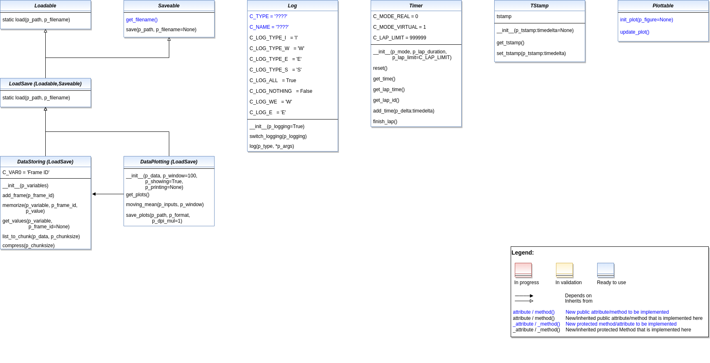

Basic Functions
Various
Ver. 1.7.6 (2022-08-21)
This module provides various classes with elementry functionalities for reuse in higher level classes. For example: logging, load/save, timer…
- class mlpro.bf.various.Loadable
Bases:
objectThis abstract class adds the ability to be loadable to inherited classes.
- static load(p_path, p_filename)
Loads content from the given path and file name. If file does not exist, it returns None.
- Parameters
file (p_path Path that contains the) –
name (p_filename File) –
- Returns
A loaded object, if file content was loaded successfully. None otherwise.
- class mlpro.bf.various.Saveable
Bases:
objectThis abstract class adds the ability to be saveable to inherited classes. The filename can be generated internally by implementing the method get_filename() or provided from outside otherwise.
- C_SUFFIX = '.pkl'
- generate_filename()
To be redefined in case of use of internal generated file names.
- Returns
Returns an internal unique filename.
- save(p_path, p_filename=None) bool
Saves content to the given path and file name. If file name is None, a unique file name will be generated by calling method generate_filename(). If it returns False then the saving method is failed.
- Parameters
saved (p_path Path where file will be) –
name (p_filename File) –
- Returns
True, if file content was saved successfully. False otherwise.
- class mlpro.bf.various.LoadSave
Bases:
mlpro.bf.various.Loadable,mlpro.bf.various.SaveableThis abstract class adds the ability to be loadable and saveable to inherited classes. The filename can be generated internally by implementing the method generate_filename() or provided from outside otherwise. See classes Loadable and Saveable for further information.
- class mlpro.bf.various.Log(p_logging=True)
Bases:
objectThis class adds elementry log functionality to inherited classes.
- Parameters
p_logging – Log level (see constants C_LOG_*). Default: Log.C_LOG_ALL
- C_TYPE = '????'
- C_NAME = '????'
- C_LOG_TYPE_I = 'I'
- C_LOG_TYPE_W = 'W'
- C_LOG_TYPE_E = 'E'
- C_LOG_TYPE_S = 'S'
- C_LOG_TYPES = ['I', 'W', 'E', 'S']
- C_COL_WARNING = '\x1b[93m'
- C_COL_ERROR = '\x1b[91m'
- C_COL_SUCCESS = '\x1b[32m'
- C_COL_RESET = '\x1b[0m'
- C_LOG_ALL = True
- C_LOG_NOTHING = False
- C_LOG_WE = 'W'
- C_LOG_E = 'E'
- C_LOG_LEVELS = [True, False, 'W', 'E']
- C_INST_MSG = True
- switch_logging(p_logging)
Sets new log level.
- Parameters
p_logging – Log level (constant C_LOG_LEVELS contains valid values)
- log(p_type, *p_args)
Writes log line to standard output in format: yyyy-mm-dd hh:mm:ss.mmmmmm [p_type C_TYPE C_NAME]: [p_args]
- Parameters
entry (p_type type of log) –
informations (p_args log) –
- Returns
Nothing
- class mlpro.bf.various.Timer(p_mode, p_lap_duration: datetime.timedelta, p_lap_limit=999999)
Bases:
objectTimer class in two time modes (real/virtual) and with simple lap management.
- C_MODE_REAL = 0
- C_MODE_VIRTUAL = 1
- C_LAP_LIMIT = 999999
- reset() None
Resets timer.
- Returns
Nothing
- get_time() datetime.timedelta
- get_lap_time() datetime.timedelta
- get_lap_id()
- add_time(p_delta: datetime.timedelta)
- finish_lap() bool
Finishes the current lap. In timer mode C_MODE_REAL the remaining time until the end of the lap will be paused.
- Returns
True, if the remaining time to the next lap was positive. False, if the timer timed out.
- class mlpro.bf.various.TStamp(p_tstamp: Optional[datetime.timedelta] = None)
Bases:
objectThis class provides elementry time stamp functionality for inherited classes.
- get_tstamp() datetime.timedelta
- set_tstamp(p_tstamp: datetime.timedelta)
- class mlpro.bf.various.ScientificObject
Bases:
objectThis class provides elementary functionality for storing a scientific reference.
- C_SCIREF_TYPE_NONE = None
- C_SCIREF_TYPE_ARTICLE = 'Journal Article'
- C_SCIREF_TYPE_BOOK = 'Book'
- C_SCIREF_TYPE_ONLINE = 'Online'
- C_SCIREF_TYPE_PROCEEDINGS = 'Proceedings'
- C_SCIREF_TYPE_TECHREPORT = 'Technical Report'
- C_SCIREF_TYPE_UNPUBLISHED = 'Unpublished'
- C_SCIREF_TYPE = None
- C_SCIREF_AUTHOR = None
- C_SCIREF_TITLE = None
- C_SCIREF_JOURNAL = None
- C_SCIREF_ABSTRACT = None
- C_SCIREF_VOLUME = None
- C_SCIREF_NUMBER = None
- C_SCIREF_PAGES = None
- C_SCIREF_YEAR = None
- C_SCIREF_MONTH = None
- C_SCIREF_DAY = None
- C_SCIREF_DOI = None
- C_SCIREF_KEYWORDS = None
- C_SCIREF_ISBN = None
- C_SCIREF_SERIES = None
- C_SCIREF_PUBLISHER = None
- C_SCIREF_CITY = None
- C_SCIREF_COUNTRY = None
- C_SCIREF_URL = None
- C_SCIREF_CHAPTER = None
- C_SCIREF_BOOKTITLE = None
- C_SCIREF_INSTITUTION = None
- C_SCIREF_CONFERENCE = None
- C_SCIREF_NOTES = None
- C_SCIREF_EDITOR = None
Mathematics

Ver. 1.5.0 (2022-09-11)
This module provides basic mathematical classes.
- class mlpro.bf.math.Dimension(p_name_short, p_base_set='R', p_name_long='', p_name_latex='', p_unit='', p_unit_latex='', p_boundaries=[], p_description='', p_logging=False)
Bases:
mlpro.bf.events.EventManagerObjects of this type specify properties of a dimension of a set.
- p_name_shortstr
Short name of dimension
- p_base_set
Base set of dimension. See constants C_BASE_SET_*. Default = C_BASE_SET_R.
- p_name_long :str
Long name of dimension (optional)
- p_name_latexstr
LaTeX name of dimension (optional)
- p_unitstr
Unit (optional)
- p_unit_latexstr
LaTeX code of unit (optional)
- p_boundariesList
List with minimum and maximum value (optional)
- p_descriptionstr
Description of dimension (optional)
- p_logging
Log level (see constants of class Log). Default: Log.C_LOG_ALL
- C_BASE_SET_R = 'R'
- C_BASE_SET_N = 'N'
- C_BASE_SET_Z = 'Z'
- C_BASE_SET_DO = 'DO'
- C_EVENT_BOUNDARIES = 0
- get_id()
- get_name_short()
- get_base_set()
- get_name_long()
- get_name_latex()
- get_unit()
- get_unit_latex()
- get_boundaries()
- set_boundaries(p_boundaries)
- get_description()
- copy()
- class mlpro.bf.math.Set
Bases:
objectObjects of this type describe a (multivariate) set in a mathematical sense.
- add_dim(p_dim: mlpro.bf.math.Dimension)
Raises the dimensionality of the set by adding a new dimension.
- Parameters
added (p_dim Dimension to be) –
- get_dim(p_id) mlpro.bf.math.Dimension
Returns the dimension specified by it’s unique id.
- get_num_dim()
Returns the dimensionality of the set (=number of dimensions of the set).
- get_dim_ids()
Returns the unique ids of the related dimensions.
- spawn(p_id_list: list)
Spawns a new class with same type and a subset of dimensions specified by an index list.
- Parameters
adopted (p_id_list List of indices of dimensions to be) –
- Returns
New object with subset of dimensions
- copy(p_new_dim_ids=True)
- append(p_set, p_new_dim_ids=True)
- class mlpro.bf.math.DataObject(p_data, *p_meta_data)
Bases:
objectContainer class for (big) data objects of any type with optional additional meta data.
- get_data()
- get_meta_data() tuple
- class mlpro.bf.math.Element(p_set: mlpro.bf.math.Set)
Bases:
objectElement of a (multivariate) set.
- get_dim_ids() list
- get_values()
- set_values(p_values)
Overwrites the values of all components of the element.
- Parameters
dimensions. (p_values Something iterable with same length as number of element) –
- get_value(p_dim_id)
- set_value(p_dim_id, p_value)
- class mlpro.bf.math.ElementList
Bases:
objectList of Element objects.
- add_elem(p_id, p_elem: mlpro.bf.math.Element)
Adds an element object under it’s id in the internal element list.
- Parameters
element (p_id Unique id of the) –
added (p_elem Element object to be) –
- get_elem_ids() list
- get_elem(p_id) mlpro.bf.math.Element
- class mlpro.bf.math.MSpace
Bases:
mlpro.bf.math.SetObjects of this type represent a metric space. The method distance implements the metric of the space.
- distance(p_e1: mlpro.bf.math.Element, p_e2: mlpro.bf.math.Element)
- class mlpro.bf.math.ESpace
Bases:
mlpro.bf.math.MSpaceObjects of this type represent an Euclidian space. The distance method implements the Euclidian norm.
- distance(p_e1: mlpro.bf.math.Element, p_e2: mlpro.bf.math.Element)
- class mlpro.bf.math.Function(p_input_space: mlpro.bf.math.MSpace, p_output_space: mlpro.bf.math.MSpace, p_output_elem_cls=<class 'mlpro.bf.math.Element'>)
Bases:
objectModel class for an elementary bi-multivariate mathematical function that maps elements of a multivariate input space to elements of a multivariate output space.
- map(p_input: mlpro.bf.math.Element) mlpro.bf.math.Element
Maps a multivariate abscissa/input element to a multivariate ordinate/output element.
Data Management
Ver. 1.3.1 (2021-09-25)
This module provides various elementary data management classes.
- class mlpro.bf.data.DataStoring(p_variables)
Bases:
mlpro.bf.various.LoadSaveThis class provides a functionality to store values of variables during training/simulation.
- C_VAR0 = 'Frame ID'
- add_frame(p_frame_id)
To store unique sections in a variable (e.g episodes in RL, etc.)
- memorize(p_variable, p_frame_id, p_value)
To store a particular variable into a memory
- get_values(p_variable, p_frame_id=None)
To obtain value from the memory
- list_to_chunks(p_data, p_chunksize)
- compress(p_chunksize)
- save_data(p_path, p_filename=None, p_delimiter='\t') bool
To save stored data in memory_dict as a readable file format
- load_data(p_path, p_filename, p_delimiter='\t') bool
To load data from a readable file format and store them into the DataStoring class format
- class mlpro.bf.data.BufferElement(p_element: dict)
Bases:
objectBase class implementation for buffer element
- add_value_element(p_val: dict)
Adding new value to the element container
- Parameters
p_val (dict) – Elements in dictionary
- get_data()
Get the buffer element.
- Returns
Returns the buffer element.
- class mlpro.bf.data.Buffer(p_size=1)
Bases:
objectBase class implementation for buffer management.
- add_element(p_elem: mlpro.bf.data.BufferElement)
Add element to the buffer.
- Parameters
p_elem (BufferElement) – Element of Buffer
- clear()
Resets buffer.
- get_latest()
Returns latest buffered element.
- get_all()
Return all buffered elements.
- get_sample(p_num: int)
Sample some element from the buffer.
- Parameters
p_num (int) – Number of sample
- Returns
Samples in dictionary
- is_full() bool
Check if the buffer is full.
- Returns
True, if the buffer is full
- class mlpro.bf.data.BufferRnd(p_size=1)
Bases:
mlpro.bf.data.BufferBuffer implmentation with random sampling
Data Plotting
Ver. 1.0.2 (2021-12-10)
This module provides various classes related to data plotting.
- class mlpro.bf.plot.Plottable
Bases:
objectProperty class that inherits the ability to be plottable. The constructor initializes the plot. Optionally the plot itself will be embedded in a matplotlib figure.
- Parameters
p_figure (TYPE, optional) – Optional MatPlotLib host figure, where the plot shall be embedded. The default is None.
- init_plot(p_figure=None)
- update_plot()
Updates the plot.
- class mlpro.bf.plot.DataPlotting(p_data: mlpro.bf.data.DataStoring, p_type='Episodic', p_window=100, p_showing=True, p_printing=None, p_figsize=(7, 7), p_color='darkblue')
Bases:
mlpro.bf.various.LoadSaveThis class provides a functionality to plot the stored values of variables.
- Parameters
p_data (DataStoring) – Data object with stored variables values.
p_type (str, optional) – Type of plot. The default is C_PLOT_TYPE_EP.
p_window (int, optional) – Moving average parameter. The default is 100.
p_showing (Bool, optional) – Showing graphs after they are generated. The default is True.
p_printing (dict, optional) –
Additional important parameters for plotting. [0] = Bool : Whether the stored values is plotted. [1] = Float : Min. value on graph. [2] = Float : Max. value on graph. Set to -1, if you want to set min/max value according to the stored values. Example = {“p_variable_1” : [True,0,-1],
”p_variable_2” : [True,-0.5,10]}.
The default is None.
p_figsize (int, optional) – Frame size. The default is (7,7).
p_color (str, optional) – Line colors. The default is “darkblue”.
- C_PLOT_TYPE_CY
one of the plotting types, which plot the graph with multiple lines according to the number of frames.
- Type
str
- C_PLOT_TYPE_EP
one of the plotting types, which plot the graph everything in one line regardless the number of frames.
- Type
str
- C_PLOT_TYPE_EP_M
one of the plotting types, which plot only the mean value of each variable for each frame.
- Type
str
- C_PLOT_TYPE_CY = 'Cyclic'
- C_PLOT_TYPE_EP = 'Episodic'
- C_PLOT_TYPE_EP_M = 'Episodic Mean'
- get_plots()
A function to plot data.
- plots_type_cy()
A function to plot data per cycle.
- plots_type_ep()
A function to plot data per frame by extending the cyclic plots in one plot.
- plots_type_ep_mean()
A function to plot data per frame according to its mean value.
- moving_mean(p_inputs, p_window)
This method creates a series of averages of different subsets of the full data set.
- Parameters
p_inputs (list of floats) – input dataset.
p_window (int) – moving average parameter.
- Returns
outputs – transformed data set.
- Return type
list of floats
- save_plots(p_path, p_format, p_dpi_mul=1)
This method is used to save generated plots.
- Parameters
p_path (str) – Path where file will be saved.
p_format (str) – Format of the saved file. Options: ‘eps’, ‘jpg’, ‘png’, ‘pdf’, ‘svg’.
p_dpi_mul (int, optional) – Saving plots parameter. The default is 1.
- Returns
True, if plots where saved successfully. False otherwise..
- Return type
bool
Event Handling

Ver. 1.0.0 (2022-08-21)
This module provides classes for event handling. To this regard, the property class Eventmanager is provided to add event functionality to child classes by inheritence.
- class mlpro.bf.events.Event(p_raising_object, **p_kwargs)
Bases:
objectRoot class for events. It is ready to use and transfers the raising object and further key/value data to the event handler.
- Parameters
p_raising_object – Reference to object that raised the event.
**p_kwargs – List of named parameters
- get_raising_object()
- get_data()
- class mlpro.bf.events.EventManager(p_logging=True)
Bases:
mlpro.bf.various.LogThis property class provides universal event management functionalities to be inherited to child classes.
- Parameters
p_logging – Log level (see constants of class Log). Default: Log.C_LOG_ALL
- C_TYPE = 'EventManager'
- register_event_handler(p_event_id, p_event_handler)
Registers an event handler.
- Parameters
p_event_id – Unique event id
p_event_handler – Reference to an event handler method with parameters p_event_id and p_event_object:Event
- remove_event_handler(p_event_id, p_event_handler)
Removes an already registered event handler.
- Parameters
p_event_id – Unique event id
p_event_handler – Reference to an event handler method.
- _raise_event(p_event_id, p_event_object: mlpro.bf.events.Event)
Raises an event and calls all registered handlers. To be used inside an event manager class.
- Parameters
p_event_id – Unique event id
p_event_object (Event) – Event object with further context informations
Exceptions
Ver. 1.0.2 (2021-12-12)
This module provides exception classes.
- exception mlpro.bf.exceptions.ParamError
Bases:
ExceptionTo be raised on a parameter error…
- exception mlpro.bf.exceptions.ImplementationError
Bases:
ExceptionTo be raised on an implementation error in a child class of MLPro…
- exception mlpro.bf.exceptions.Error
Bases:
ExceptionTo be raised on an error…
Multiprocessing

Ver. 0.1.0 (2022-09-11)
This module provides classes for multiprocessing with optional interprocess communication (IPC) based on shared objects.
Bases:
objectTemplate class for shared objects. It is ready to use and the default class for IPC. It is also possible to inherit and enrich this class for special needs. It provides elementary mechanisms for access control and messaging.
- class mlpro.bf.mp.Async(p_range=1, p_cls_shared=None, p_logging=True)
Bases:
mlpro.bf.various.LogProperty class that enables child classes to run sub-tasks asynchronously. Depending on the given range a task can be executed as a separate thread in the same process or a separate process on the same machine.
- Parameters
p_cls_shared – Optional class name for a shared object (class Shared or a child class of Shared)
p_logging – Log level (see constants of class Log). Default: Log.C_LOG_ALL
- C_RANGE_THREAD = 0
- C_RANGE_PROCESS = 1
- class mlpro.bf.mp.Task(p_range=1, p_autorun=0, p_cls_shared=None, p_logging=True, **p_kwargs)
Bases:
mlpro.bf.mp.Async,mlpro.bf.events.EventManager…
- C_TYPE = 'Task'
- C_AUTORUN_NONE = 0
- C_AUTURUN_RUN = 1
- C_AUTORUN_LOOP = 2
- run(**p_kwargs)
- run_loop(**p_kwargs)
- terminate()
- class mlpro.bf.mp.Workflow(p_range=1, p_autorun=0, p_cls_shared=None, p_logging=True, **p_kwargs)
Bases:
mlpro.bf.mp.Task…
- C_TYPE = 'Workflow'
- add_task(p_task: mlpro.bf.mp.Task, p_pred_tasks: Optional[list] = None)
Adds a task to the workflow.
- Parameters
p_task (Task) – Task object to be added.
p_pred_tasks (list) – Optional list of predecessor task objects
- do_recursively(p_method, **p_kwargs)
- terminate()
Machine Learning

Ver. 1.5.0 (2022-09-11) This module provides fundamental machine learning templates, functionalities and properties.
- class mlpro.bf.ml.HyperParam(p_name_short, p_base_set='R', p_name_long='', p_name_latex='', p_unit='', p_unit_latex='', p_boundaries=[], p_description='', p_logging=False)
Bases:
mlpro.bf.math.DimensionHyperparameter definition class. See class Dimension for further descriptions.
- register_callback(p_cb)
- callback_on_change(p_value)
- class mlpro.bf.ml.HyperParamSpace
Bases:
mlpro.bf.math.ESpaceHyperparameter space, which is just an Euclidian space.
- class mlpro.bf.ml.HyperParamTuple(p_set: mlpro.bf.math.Set)
Bases:
mlpro.bf.math.ElementTuple of hyperparameters, which is an element of a hyperparameter space
- set_value(p_dim_id, p_value)
- class mlpro.bf.ml.HyperParamDispatcher(p_set: mlpro.bf.math.Set)
Bases:
mlpro.bf.ml.HyperParamTupleTo dispatch multiple hp tuples into one tuple
- add_hp_tuple(p_hpt: mlpro.bf.ml.HyperParamTuple)
- get_value(p_dim_id)
- set_value(p_dim_id, p_value)
- get_values()
- set_values(p_values)
Overwrites the values of all components of the element.
- Parameters
dimensions. (p_values Something iterable with same length as number of element) –
- class mlpro.bf.ml.Model(p_buffer_size=0, p_ada=True, p_logging=True, **p_par)
Bases:
mlpro.bf.events.EventManager,mlpro.bf.various.LoadSave,mlpro.bf.plot.Plottable,mlpro.bf.various.ScientificObject- Fundamental template class for adaptive ML models. Supports especially
Adaptivity
Data buffering
Hyperparameter management
Plotting
Scientific referencing on source code level
- Parameters
p_buffer_size (int) – Initial size of internal data buffer. Defaut = 0 (no buffering).
p_ada (bool) – Boolean switch for adaptivitiy. Default = True.
p_logging – Log level (see constants of class Log). Default: Log.C_LOG_ALL
p_par (Dict) – Futher model specific parameters (to be defined in chhild class).
- C_TYPE = 'Model'
- C_NAME = '????'
- C_EVENT_ADAPTED = 0
- C_BUFFER_CLS
alias of
mlpro.bf.data.Buffer
- C_SCIREF_TYPE = None
- get_hyperparam() mlpro.bf.ml.HyperParamTuple
Returns the internal hyperparameter tuple to get access to single values.
- switch_adaptivity(p_ada: bool)
Switches adaption functionality on/off.
- Parameters
p_ada (bool) – Boolean switch for adaptivity
- set_random_seed(p_seed=None)
Resets the internal random generator using the given seed.
- get_adapted() bool
Returns True, if the model was adapted at least once. False otherwise.
- adapt(*p_args) bool
Adapts the model by calling the custom method _adapt().
- Parameters
p_args – All parameters that are needed for the adaption. Depends on the specific higher context.
- Returns
True, if something has been adapted. False otherwise.
- Return type
bool
- clear_buffer()
Clears internal buffer (if buffering is active).
- get_accuracy()
Computes the accuracy of the model.
- Returns
Accuracy of the model as a scalar value in interval [0,1]
- Return type
float
- class mlpro.bf.ml.Mode(p_mode, p_logging=True)
Bases:
mlpro.bf.various.LogProperty class that adds a mode and related methods to a child class.
- Parameters
p_mode – Operation mode. Valid values are stored in constant C_VALID_MODES.
p_logging – Log level (see constants of class Log). Default: Log.C_LOG_ALL
- C_MODE_INITIAL = -1
- C_MODE_SIM = 0
- C_MODE_REAL = 1
- C_VALID_MODES = [0, 1]
- get_mode()
Returns current mode.
- set_mode(p_mode)
Sets new mode.
- Parameters
p_mode – Operation mode. Valid values are stored in constant C_VALID_MODES.
- class mlpro.bf.ml.Scenario(p_mode=0, p_ada: bool = True, p_cycle_limit=0, p_visualize=True, p_logging=True)
Bases:
mlpro.bf.ml.Mode,mlpro.bf.various.LoadSave,mlpro.bf.plot.PlottableTemplate class for a common ML scenario with an adaptive model inside. To be inherited and specialized in higher ML subtopic layers.
- The following key features are included:
Operation mode
Cycle management
Timer
Latency
Explicit handling of an adaptive ML model inside
- Parameters
p_mode – Operation mode. See Mode.C_VALID_MODES for valid values. Default = Mode.C_MODE_SIM.
p_ada (bool) – Boolean switch for adaptivity. Default = True.
p_cycle_limit (int) – Maximum number of cycles. Default = 0 (no limit).
p_visualize (bool) – Boolean switch for env/agent visualisation. Default = True.
p_logging – Log level (see constants of class Log). Default: Log.C_LOG_ALL.
- C_TYPE = 'Scenario'
- C_NAME = '????'
- switch_logging(p_logging)
Sets new log level.
- Parameters
p_logging – Log level (constant C_LOG_LEVELS contains valid values)
- init_plot(p_figure=None)
- update_plot()
Updates the plot.
- get_model() mlpro.bf.ml.Model
Returns the adaptive model object inside the scenario.
- set_mode(p_mode)
Sets new mode.
- Parameters
p_mode – Operation mode. Valid values are stored in constant C_VALID_MODES.
- get_latency() datetime.timedelta
Returns the latency of the scenario. To be implemented in child class.
- set_cycle_limit(p_limit)
- reset(p_seed=1)
Resets the scenario and especially the ML model inside. Internal random generators are seed with the given value. Custom reset actions can be implemented in method _reset().
- Parameters
p_seed (int) – Seed value for internal random generator
- run_cycle()
Runs a single process cycle.
- Returns
success (bool) – True on success. False otherwise.
error (bool) – True on error. False otherwise.
timeout (bool) – True on timeout. False otherwise.
cycle_limit (bool) – True, if cycle limit has reached. False otherwise.
adapted (bool) – True, if ml model adapted something in this cycle. False otherwise.
- get_cycle_id()
Returns current cycle id.
- run(p_term_on_success: bool = True, p_term_on_error: bool = True, p_term_on_timeout: bool = False)
Runs the scenario as a sequence of single process steps until a terminating event occures.
- Parameters
p_term_on_success (bool) – If True, the run terminates on success. Default = True.
p_term_on_error (bool) – If True, the run terminates on error. Default = True.
p_term_on_timeout (bool) – If True, the run terminates on timeout. Default = False.
- Returns
success (bool) – True on success. False otherwise.
error (bool) – True on error. False otherwise.
timeout (bool) – True on timeout. False otherwise.
cycle_limit (bool) – True, if cycle limit has reached. False otherwise.
adapted (bool) – True, if ml model adapted something. False otherwise.
num_cycles (int) – Number of cycles.
- class mlpro.bf.ml.TrainingResults(p_scenario: mlpro.bf.ml.Scenario, p_run, p_cycle_id, p_path=None, p_logging='W')
Bases:
mlpro.bf.various.Log,mlpro.bf.various.SaveableResults of a training (see class Training).
- Parameters
p_scenario (Scenario) – Related scenario.
p_run (int) – Run id.
p_cycle_id (int) – Id of first cycle of this run.
p_path (str) – Optional estination path to store the results.
p_logging – Log level (see constants of class Log). Default: Log.C_LOG_ALL
- C_TYPE = 'Results '
- add_custom_result(p_name, p_value)
- close()
- log_results()
- save(p_path, p_filename='summary.csv') bool
Saves a training summary in the given path.
- Parameters
p_path (str) – Destination folder
p_filename (string) – Name of summary file. Default = ‘summary.csv’
- Returns
success – True, if summary file was created successfully. False otherwise.
- Return type
bool
- class mlpro.bf.ml.HyperParamTuner(p_logging=True)
Bases:
mlpro.bf.various.Log,mlpro.bf.various.SaveableTemplate class for hyperparameter tuning (HPT).
- C_TYPE = 'HyperParam Tuner'
- C_NAME = '????'
- C_VAR_TRIAL = 'Trial'
- C_VAR_SCORE = 'Highscore'
- maximize(p_training_cls, p_num_trials, p_root_path, **p_training_param) mlpro.bf.ml.TrainingResults
…
- Parameters
p_training_cls – Training class to be instantiated/executed
p_num_trials (str) – Number of trials
p_num_trials – Root path of the training class
p_training_param (dictionary) – Training parameters
- Returns
results – Training results of the best tuned model (see class TrainingResults).
- Return type
- save(p_param, p_result, p_filename='best_parameters.csv') bool
Saves the best result of the hyperparameter tuning in the root path.
- Parameters
p_param (dict) – A dictionary that consists of list of best parameters
p_result (float) – Highest score
p_filename (str) – Name of summary file. Default = ‘best_parameters.csv’
- Returns
success – True, if summary file was created successfully. False otherwise.
- Return type
bool
- class mlpro.bf.ml.Training(**p_kwargs)
Bases:
mlpro.bf.various.LogTemplate class for a ML training and hyperparameter tuning.
- Parameters
p_scenario_cls – Name of ML scenario class, compatible to/inherited from class Scenario.
p_cycle_limit (int) – Maximum number of training cycles (0=no limit). Default = 0.
p_adaptation_limit (int) – Maximum number of adaptations (0=no limit). Default = 0.
p_hpt (HyperParamTuner) – Optional hyperparameter tuner (see class HyperParamTuner). Default = None.
p_hpt_trials (int) – Optional number of hyperparameter tuning trials. Default = 0.
p_path (str) – Optional destination path to store training data. Default = None.
p_visualize (bool) – Boolean switch for env/agent visualisation. Default = False
p_logging – Log level (see constants of class Log). Default = Log.C_LOG_WE.
- C_TYPE = 'Training'
- C_NAME = '????'
- C_CLS_RESULTS
alias of
mlpro.bf.ml.TrainingResults
- C_MODE_TRAIN = 0
- C_MODE_EVAL = 1
- C_LOG_SEPARATOR = '------------------------------------------------------------------------------'
- get_scenario() mlpro.bf.ml.Scenario
- run_cycle() bool
Runs a single training cycle.
- Returns
termination_event – True, if training run has finished. False otherwise.
- Return type
bool
- run() mlpro.bf.ml.TrainingResults
Runs a training and returns the results of the best trained/tuned agent.
- Returns
Object with training results.
- Return type
- get_results() mlpro.bf.ml.TrainingResults
- class mlpro.bf.ml.MLTask(p_range=1, p_autorun=0, p_cls_shared=None, p_buffer_size=0, p_ada=True, p_logging=True, **p_kwargs)
Bases:
mlpro.bf.mp.Task,mlpro.bf.ml.Model…
- C_TYPE = 'ML-Task'
- class mlpro.bf.ml.MLWorkflow(p_range=1, p_autorun=0, p_cls_shared=None, p_ada=True, p_logging=True, **p_kwargs)
Bases:
mlpro.bf.mp.Workflow,mlpro.bf.ml.Model…
- C_TYPE = 'ML-Workflow'
Stream Providers and Streams

Ver. 0.2.5 (2022-06-25)
Model classes for stream providers and streams.
- class mlpro.bf.streams.Feature(p_name_short, p_base_set='R', p_name_long='', p_name_latex='', p_unit='', p_unit_latex='', p_boundaries=[], p_description='', p_logging=False)
Bases:
mlpro.bf.math.Dimension
- class mlpro.bf.streams.Label(p_name_short, p_base_set='R', p_name_long='', p_name_latex='', p_unit='', p_unit_latex='', p_boundaries=[], p_description='', p_logging=False)
Bases:
mlpro.bf.math.Dimension
- class mlpro.bf.streams.Instance(p_feature_data: mlpro.bf.math.Element, p_label_data: Optional[mlpro.bf.math.Element] = None, **p_kwargs)
Bases:
objectInstance class to store the current instance and the corresponding labels of the stream
- Parameters
- C_TYPE = 'Instance'
- get_feature_data() mlpro.bf.math.Element
- get_label_data() mlpro.bf.math.Element
- get_time_stamp()
- get_kwargs()
- class mlpro.bf.streams.Stream(p_id=0, p_name: str = '', p_num_instances: int = 0, p_version: str = '', p_mode=0, p_logging=True, **p_kwargs)
Bases:
mlpro.bf.ml.Mode,mlpro.bf.various.LoadSave,mlpro.bf.various.ScientificObjectTemplate class for data streams.
- Parameters
p_id – id of the stream
p_name (str) – name of the stream
p_num_instances (int) – Number of instances in the stream
p_version (str) – Version of the stream
p_mode – Operation mode. Valid values are stored in constant C_VALID_MODES.
p_logging – Log level (see constants of class Log). Default: Log.C_LOG_ALL
p_kwargs – Further stream specific parameters
- C_TYPE = 'Stream'
- get_id() str
- get_name() str
- get_url() str
- get_num_features() int
- get_feature_space()
- reset(p_seed=None)
Resets stream generator and initializes an internal random generator with the given seed value by calling the custom method _reset().
- Parameters
p_seed (int) – Seed value for random generator.
- get_next() mlpro.bf.streams.Instance
Returns next data stream instance or None at the end of the stream. The next instance is determined by calling the custom method _get_next().
- Returns
instance – Next instance of data stream or None.
- Return type
- class mlpro.bf.streams.StreamProvider(p_logging=True)
Bases:
mlpro.bf.various.Log,mlpro.bf.various.ScientificObjectTemplate class for stream providers.
- Parameters
p_logging – Log level (see constants of class Log). Default: Log.C_LOG_ALL
- C_TYPE = 'Stream Provider'
- get_stream_list(p_logging=True, **p_kwargs) list
Gets a list of provided streams by calling custom method _get_stream_list().
- Parameters
p_display_list (bool) – boolean value to log the list of streams
- Returns
stream_list – List of provided streams.
- Return type
list
- get_stream(p_id) mlpro.bf.streams.Stream
Returns stream with the specified id by calling custom method _get_stream().
- Parameters
p_id (str) – Id of the requested stream.
- Returns
s – Stream object or None in case of an error.
- Return type